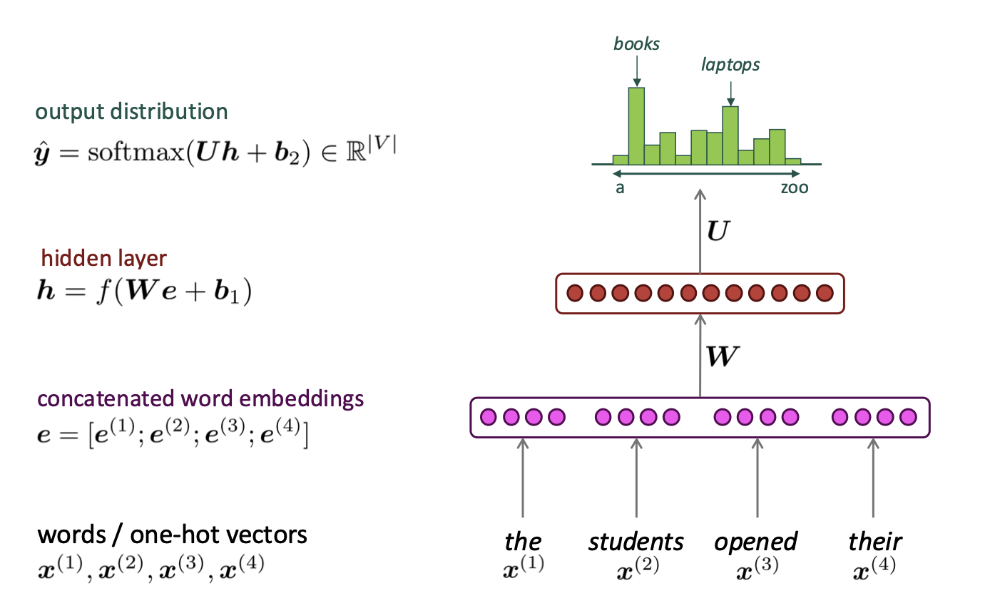

# CMSC 25700/35100: ## Natural Language Processing ## Lecture 4: Language Modeling <p style="text-align: center;"> <strong>Chenhao Tan</strong><br/> University of Chicago<br/> @ChenhaoTan, @chenhaotan.bsky.social<br/> chenhao@uchicago.edu </p> <a href="https://github.com/uchicago-nlp-course/winter-2025-students/issues/1">Submit Music Recommendations</a>, kudos to Mina Lee <br> <a href="https://github.com/uchicago-nlp-course/winter-2025-students/issues/2">Submit jokes</a> </p>
## Logistics * A1 clarification * <a href="https://forms.gle/1z2K5qDNknvc5ujEA">Pre-course survey</a> * <a href="https://forms.gle/UBSKxrGiWsVK91Cf7">Two-week survey</a>
## Lecture Outline 1. Language Modeling & Language Models (LMs) 2. N-gram Language Models 3. Fixed-window Neural Language Models 4. Recurrent Neural Networks 5. Evaluating Language Models
## Lecture Outline 1. **Language Modeling & Language Models (LMs)** 2. <span style="color: #767676;">N-gram Language Models</span> 3. <span style="color: #767676;">Fixed-window Neural Language Models</span> 4. <span style="color: #767676;">Recurrent Neural Networks</span> 5. <span style="color: #767676;">Evaluating Language Models</span>
## Language Modeling **Language modeling** is the task of predicting what word comes next *the students opened their ______* Possible completions: books, laptops, exams, minds...
## Language Modeling: Formal Definition Given a sequence of words $x^{(1)}, x^{(2)}, \ldots, x^{(t)}$, compute the probability distribution of the next word $x^{(t+1)}$ $$P(x^{(t+1)} | x^{(t)}, \ldots, x^{(2)}, x^{(1)})$$ where $x^{(t+1)}$ can be any word in the vocabulary $V = \\{w_1, w_2, \ldots, w_{|V|}\\}$
## Language Model (LM) A system that does language modeling is called a **language model (LM)** You can also think of a language model as a system that **assigns a probability to a piece of text** For text $x^{(1)}, x^{(2)}, \ldots, x^{(T)}$: <!-- .element: class="fragment" --> $$P(x^{(1)}, \ldots, x^{(T)}) = \prod_{t=1}^{T} P(x^{(t)} | x^{(t-1)}, \ldots, x^{(1)})$$ <!-- .element: class="fragment" -->
## You Use Language Models Every Day! - Search engine autocomplete - Email smart compose - ChatGPT and other AI assistants All powered by language models!
## Lecture Outline 1. <span style="color: #767676;">Language Modeling & Language Models (LMs)</span> 2. **N-gram Language Models** 3. <span style="color: #767676;">Fixed-window Neural Language Models</span> 4. <span style="color: #767676;">Recurrent Neural Networks</span> 5. <span style="color: #767676;">Evaluating Language Models</span>
## N-gram Language Models **Definition**: An n-gram is a chunk of n consecutive words - **unigrams**: "the", "students", "opened", "their" - **bigrams**: "the students", "students opened", "opened their" - **trigrams**: "the students opened", "students opened their" - **4-grams**: "the students opened their" **Idea**: Count the frequency of every n-gram and use it to predict the next word
## N-gram LM: Example Suppose we are learning a **4-gram** language model: *as the proctor started the clock, the students opened their _____* We discard early context and condition only on the last 3 words: $$P(w | \text{students opened their}) = \frac{\text{count(students opened their } w)}{\text{count(students opened their)}}$$
## N-gram LM: Example (cont.) Suppose in the corpus: - "students opened their" occurred **1,000** times - "students opened their books" occurred **400** times - $P(\text{books} | \text{students opened their}) = 0.4$ - "students opened their exams" occurred **100** times - $P(\text{exams} | \text{students opened their}) = 0.1$
## The Markov Assumption We make a **Markov assumption**: $x^{(t+1)}$ depends only on the preceding n-1 words $$P(x^{(t+1)} | x^{(t)}, \ldots, x^{(1)}) = P(x^{(t+1)} | x^{(t)}, \ldots, x^{(t-n+2)})$$ $$\approx \frac{\text{count}(x^{(t+1)}, x^{(t)}, \ldots, x^{(t-n+2)})}{\text{count}(x^{(t)}, \ldots, x^{(t-n+2)})}$$
## N-gram LM: Generating Text Use the language model to **generate text**: 1. Start with context: *today the _______* 2. Get probability distribution over next words 3. Sample from distribution (e.g., "price" with p=0.077) 4. Update context: *today the price _______* 5. Repeat until done
## N-gram LM: Generated Example Trigram model trained on Reuters (business news): > *today the price of gold per ton, while production of shoe lasts and shoe industry, the bank intervened just after it considered and rejected an imf demand to rebuild depleted european stocks, sept 30 end primary 76 cts a share.* Surprisingly **grammatical**! ...but **incoherent**. Why?
## N-gram LM: Sparsity Problems **Sparsity Problem 1**: What if "students opened their $w$" never occurred? - Then $w$ has probability 0! - **Solution**: Add small $\delta$ to count for every $w \in V$ (**smoothing**) **Sparsity Problem 2**: What if "students opened their" never occurred? - Then we can't calculate probability for any $w$! - **Solution**: Condition on "opened their" instead (**backoff**)
## Smoothing Instead of MLE (which leads to zeros), use estimation methods that lead to **smoother** distributions **Problem**: MLE gives zero probability to unseen n-grams! **Solution**: Redistribute probability mass to unseen events
## Add-1 (Laplace) Smoothing Just add 1 to all counts! **MLE estimate**: $$P_{MLE}(x | x') = \frac{\text{count}(x', x)}{\text{count}(x')}$$ **Add-1 estimate**: $$P_{add-1}(x | x') = \frac{\text{count}(x', x) + 1}{\text{count}(x') + |V|}$$ - Simple and avoids zeros - But doesn't work as well as other methods <p class="citation">J&M Section 3.4.1</p>
## Interpolation Mixture of unigram, bigram, and trigram models: $$P_{int}(x | x', x'') = \lambda_1 P_{MLE}(x) + \lambda_2 P_{MLE}(x | x'') + \lambda_3 P_{MLE}(x | x', x'')$$ where $\sum_i \lambda_i = 1$ and $\lambda_i \geq 0$ - Lambdas can be estimated using development data - Can also depend on context (larger $\lambda_3$ if we've seen the context often)
## More Smoothing Techniques - **Kneser-Ney Smoothing**: Advanced method that adjusts lower-order distributions based on how likely words are to appear in new contexts - **Stupid Backoff**: Simple backoff method that works well with large datasets - ... and many more!
## Open vs. Closed Vocabulary **Closed Vocabulary**: Known vocabulary at train and test time - Smoothing avoids zeros for unknown n-grams - But unknown **words** still cause problems! **Open Vocabulary**: Create an unknown word symbol `<UNK>` - At training: Replace rare words with `<UNK>` - At test: Replace unknown words with `<UNK>` **Warning**: When comparing LMs, make sure vocabularies match!
## Implementation Details: Special Tokens Language models use special tokens to handle boundaries and edge cases: | Token | Name | Purpose | |-------|------|---------| | `<BOS>` or `<s>` | Beginning of Sequence | Marks start of text | | `<EOS>` or `</s>` | End of Sequence | Marks end of text | | `<PAD>` | Padding | Fills sequences to equal length | | `<UNK>` | Unknown | Replaces out-of-vocabulary words |
## Why Do We Need `<BOS>` and `<EOS>`? **Problem**: How to predict the *first* word? - No previous context for $P(x^{(1)} | ???)$ - Solution: Condition on `<BOS>` token **Problem**: How does the model know when to stop generating? - Model needs to learn when a sequence should end - Solution: Train to predict `<EOS>` token *the students opened their books `<EOS>`*
## Example: Bigram with Special Tokens Training sentence: *"the cat sat"* With special tokens: *`<BOS>` the cat sat `<EOS>`* Bigrams extracted: - (`<BOS>`, the) - (the, cat) - (cat, sat) - (sat, `<EOS>`) Now we can compute $P(\text{the} | \text{<BOS>})$ for the first word!
## Padding for Batching Neural models process **batches** for efficiency **Problem**: Sentences have different lengths <div style="background-color: #f5f5f5; padding: 10px; margin: 10px 0; font-family: monospace; text-align: left;"> Sentence 1: the cat sat<br> Sentence 2: the students opened their books </div> **Solution**: Pad shorter sequences with `<PAD>` <div style="background-color: #f5f5f5; padding: 10px; margin: 10px 0; font-family: monospace; text-align: left;"> Sentence 1: the cat sat <PAD> <PAD><br> Sentence 2: the students opened their books </div> Model ignores `<PAD>` tokens during training (via masks)
## Real Tokenizers in Practice 💻 Modern tokenizers (BPE, WordPiece, SentencePiece) handle: - **Subword splitting**: "unhappiness" → ["un", "happiness"] - **Rare words**: "COVID-19" → ["COVID", "-", "19"] - **Multiple languages**: Same tokenizer for 100+ languages - **Special tokens**: `[CLS]`, `[SEP]`, `<s>`, `</s>` **Key advantage**: Fixed vocabulary size, no `<UNK>` tokens! See notebook for hands-on examples.
## Lecture Outline 1. <span style="color: #767676;">Language Modeling & Language Models (LMs)</span> 2. <span style="color: #767676;">N-gram Language Models</span> 3. **Fixed-window Neural Language Models** 4. <span style="color: #767676;">Recurrent Neural Networks</span> 5. <span style="color: #767676;">Evaluating Language Models</span>
## How to Build a Neural Language Model? Recall the language modeling task: - **Input**: Sequence of words $x^{(1)}, x^{(2)}, \ldots, x^{(t)}$ - **Output**: Probability distribution of the next word $$P(x^{(t+1)} | x^{(t)}, \ldots, x^{(2)}, x^{(1)})$$ How about a **window-based neural model**?
## Fixed-Window Neural Language Model Architecture (Bengio et al., 2003): 1. **Input**: Words as one-hot vectors $x^{(1)}, x^{(2)}, x^{(3)}, x^{(4)}$ 2. **Embedding layer**: $e = [e^{(1)}; e^{(2)}; e^{(3)}; e^{(4)}]$ (concatenated) 3. **Hidden layer**: $h = f(We + b_1)$ 4. **Output**: $\hat{y} = \text{softmax}(Uh + b_2) \in \mathbb{R}^{|V|}$ <p class="citation"><a href="https://www.jmlr.org/papers/volume3/bengio03a/bengio03a.pdf">A Neural Probabilistic Language Model</a> (Bengio et al., 2003)</p>
## Fixed-Window Neural Language Model <p></p>
## Fixed-Window Neural LM: Improvements **Improvements** over n-gram LM: - Better representations than word ids - Word embeddings generalize to unseen n-grams - Don't need to store all observed n-grams: Model parameters are fixed size The model learns distributed representations that capture semantic similarity
## Fixed-Window Neural LM: How Parameters Scale **Setup**: Vocab $|V|=10000$, embedding $d=100$, hidden $h=200$ **Parameters as function of window size $n$**: - Embedding $E$: $|V| \times d = 1M$ (independent of $n$) - Hidden $W$: $(n \cdot d) \times h = n \times 20K$ (**grows with $n$**) - Output $U$: $h \times |V| = 2M$ (independent of $n$)
## Fixed-Window Neural LM: Parameter Counts Number of parameters = 3M + 20K $\times n$ | Window $n$ | $W$ size | Total params | |------------|----------|--------------| | 4 | 80K | 3.08M | | 8 | 160K | 3.16M | | 100 | 2M | 5M | Parameters grow linearly with context window size!
## Question: What's Wrong with This Approach? <p style="text-align: center;">Discuss with your neighbor for 3 minutes</p>
## Fixed-Window Neural LM: The Fundamental Problems **Problem 1: Shallow interaction** - Embeddings concatenated: $[e^{(1)}; e^{(2)}; e^{(3)}; e^{(4)}]$ - Only **one hidden layer** → one non-linear transformation - Limited depth of interaction between words **Problem 2: Fixed context window** - Cannot look beyond $n$ previous words Solution: **Recurrent Neural Networks (RNNs)**
## Lecture Outline 1. <span style="color: #767676;">Language Modeling & Language Models (LMs)</span> 2. <span style="color: #767676;">N-gram Language Models</span> 3. <span style="color: #767676;">Fixed-window Neural Language Models</span> 4. **Recurrent Neural Networks** 5. <span style="color: #767676;">Evaluating Language Models</span>
## Recurrent Neural Networks (RNNs) **Core idea**: Process tokens one at a time, maintaining a **hidden state** that captures information from previous tokens - Can handle **any length** input - **Same weights** applied at every timestep - Hidden state acts as "memory" of past context
## RNN Architecture At each timestep $t$: 1. Take input $x^{(t)}$ and previous hidden state $h^{(t-1)}$ 2. Compute new hidden state $h^{(t)}$ 3. Predict output $\hat{y}^{(t)}$ The **recurrent connection** allows information to flow from previous timesteps
## RNN Equations **Hidden state update**: $h^{(t)} = \sigma(W_h h^{(t-1)} + W_e e^{(t)} + b_1)$ **Output prediction**: $\hat{y}^{(t)} = \text{softmax}(U h^{(t)} + b_2)$ Where: - $e^{(t)}$ is the word embedding for input $x^{(t)}$ - $W_h, W_e, U$ are weight matrices (shared across all timesteps) - $\sigma$ is a non-linear activation (e.g., tanh)
## RNN Language Model <img src="images/rnn_figure.png" alt="RNN Language Model" style="max-height: 400px;"> Same weights $(W_h, W_e, U)$ used at every timestep
## RNN Parameters: No Scaling with Sequence Length Setup: Vocab $|V|=10000$, embedding $d=100$, hidden $h=200$ Parameters (same weights reused at every timestep): - Embedding $E$: $|V| \times d = 1M$ - $W_e$ (input): $d \times h = 20K$ - $W_h$ (recurrent): $h \times h = 40K$ - $U$ (output): $h \times |V| = 2M$ Total: 3.06M parameters for ANY sequence length!
## Advantages of RNNs - Can process any length input - Model size doesn't increase for longer input - Computation at step $t$ can use information from many steps back - Weights are shared across timesteps (symmetry in processing)
## Disadvantages of RNNs - Sequential computation: Must process tokens one at a time, cannot parallelize across timesteps - Vanishing/exploding gradients make learning long-range dependencies difficult - Gradients diminish exponentially as they backpropagate through time - LSTMs and GRUs help but don't fully solve this - Information bottleneck: All history compressed into fixed-size hidden state These issues motivated alternative architectures like Transformers.
## Lecture Outline 1. <span style="color: #767676;">Language Modeling & Language Models (LMs)</span> 2. <span style="color: #767676;">N-gram Language Models</span> 3. <span style="color: #767676;">Fixed-window Neural Language Models</span> 4. <span style="color: #767676;">Recurrent Neural Networks</span> 5. **Evaluating Language Models**
## Evaluating Language Models How do we know if a language model is good? Standard metric: **Perplexity** $$\text{Perplexity} = \prod_{t=1}^{T} \left( \frac{1}{P(x^{(t)} | x^{(t-1)}, \ldots, x^{(1)})} \right)^{1/T}$$ Equivalent to the exponential of the cross-entropy loss
## Perplexity Intuition - **Lower perplexity = better model** - Interpretation: effective vocabulary size | Model | Perplexity (WikiText-103) | |-------|------------| | Unigram | ~1000 | | Bigram | ~150 | | Trigram | ~100 | | [LSTM](https://nlpprogress.com/english/language_modeling.html) | ~40 | | [GPT-2](https://cdn.openai.com/better-language-models/language_models_are_unsupervised_multitask_learners.pdf) | ~17 | | [Chinchilla](https://arxiv.org/pdf/2203.15556) (2022) | ~7 |
## Bits per Character (BPC) **Alternative metric**: Measure perplexity in **bits per character** $$\text{BPC} = \log_2(\text{Perplexity}) = -\frac{1}{N} \sum_{i=1}^{N} \log_2 P(x_i | x_{<i})$$ **Interpretation**: How many bits needed to encode each character **Why it's useful**: - Information-theoretic interpretation (compression) - Comparable across different vocabulary sizes
## Summary * Predicting next word is central to many NLP tasks * Continuous representations enable generalization beyond observed n-grams * RNNs handle variable-length input and maintain context over time * Perplexity is standard metric for evaluating language models Next: Attention mechanisms and Transformers!
# Questions?